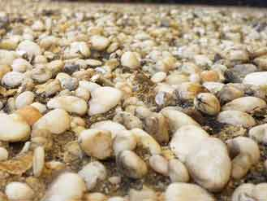

The gaze of the Universe, fixed solely upon its future, swept over a tiny planet. On the planet, there was a single dot—a city. In the city, there was a garden; in the garden, people had built a sandbox for their children—for their joy and for the peace of mind of their parents. It was daytime in the city. One by one, mothers brought their toddlers to the sandbox: some led their only treasure, while others tried to manage the energy of two or three little bundles. Some cried, some laughed, some talked without stopping, and others simply watched. The sandbox was large, square, with wooden borders. Some of the children ran into the sandbox on their own, while others looked at it with doubt, and some were lifted over the edge onto the sandy territory of the world by their mothers. A little anthill, it moves, it lives by the beating of children’s hearts and the pouring of their voices.
Squatting down, a little girl sits bent over. Her face is lowered, her hands sift through the sand, and her blue eyes intently scan the grains. Could there really be something to look at down there? The girl observes. How astonishing: the sand in the sandbox is yellow, yet the grains of sand are all different... Here is one as yellow as ochre, here is a pink one, this one is completely transparent, like a drop of water, and that one is black. Grains of sand: some are larger, as if their parents fed them well, while some are tiny specks, looking as though they might get lost at any moment. And their shape—it is different too: from perfectly round to sharp... Not a sandbox, but a whole exhibition of sand grains. The girl's hand sinks deeper into the sand—oh, what a surprise! All the sand has changed color; it is darker and colder to the touch. Why, how? In the girl’s eyes are questions and wonder. There is only her and the sand...

But then, one of the children running past bumped into her. Accidentally. The girl looked around. Around her was chaos—nothing like the billions of sand grains... Over there, two boys are fighting for a toy car; here, three girls are together baking a toy sand cake for their dolls; there, a little architect is building a sandcastle that keeps sliding down due to inexorable entropy (but the architect doesn't even know such words yet); and in the corner, a toddler is crying because sand got into his eyes. The girl rises to her feet, walks to the edge of the sandbox, to its very border, and looks with her calm, gray-blue gaze beyond the invisible wall between the world and the sandbox. Out there, the trees are grand and tall, and the sky is filled with curly clouds; out there are roads and wind, joy and danger; out there is—Freedom. But you cannot go there; children belong in the sandbox.
Evening arrives, it grows cold. Mothers take their children home. They take them by the hand, place them in strollers, carry them in their arms... Taking them away... Taking them into the sandbox of adult life, the exact same one they lived themselves. The grown-up children will fight for the right to possess material assets, bake cakes, cry from pain, and erect cathedrals... And, of course, look beyond the boundaries of the sandbox, but this time into a world invisible to their gaze... And the Universe continued its endless journey. Good night, tiny city with the yellow sandbox. Tomorrow, the grown-up children will bring a new generation here...